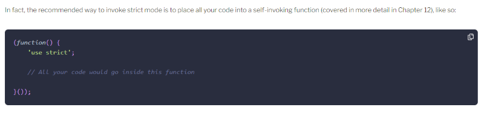

Strict mode will turn things that used to just be considered "bad practice" into actual errors, which is good because errors can then be caught earlier instead of going unnoticed.
Add 'use strict'; to the top of every javascript file, needs to be the first line (I think)
You can enable strict mode for just a single function by adding 'use strict'; as the first line in a function too.
Somehow this doesn't feel right:

I feel like I don't see self-invoking functions as much with modules now…
Ooh and modules are automatically "strict", so no need to add it to the top of those files.
Check for the existence of browser features by using an if() around the function or object in question before calling it.
The trusty debugging by "alert". No longer really necessary, still widely used.
Console.log is what I prefer over alert.
Console.trace to log a stack trace, that is new to me.
Insert "debugger;" to make the browser stop to allow you to step through and inspect variables.
But don't forget to remove them for production!
Types of errors:
'Error' commonly thrown by programmers in their own code. Constructor takes a message as a parameter.
'RangeError' when a number is outside of the acceptable range
'ReferenceError' when calling an undefined function or referring to object that doesn't exist.
'SyntaxError' when there is a syntax error in the code
'TypeError' when a string is used where a number is expected, or some other incorrect type usage
'URIError' when there is a problem decoding/encoding a URI
'InternalError' non-standard error when there's something wrong with the javascript engine.
For error types, the most supported properties are 'name', 'message', 'stack'. Might be others but inconsistently available in browsers.
Though you can throw anything, it really should be one of the above Error types.
Try, catch, finally, I know ye well.
TDD!
Jest is a framework made by Facebook to write unit tests.
An example of a test method:
test('factors of 12', () => {
expect(factorsOf(12)).toEqual([1,2,3,4,6,12]);
});
There's also "toBe" but because this is testing an array, it needs to be toEqual.
More jest matcher methods: https://jestjs.io/docs/expect
.toThrow(); to write a test that checks for an exception. I wonder if you can check the details of the exception, to make sure the message is accurate.